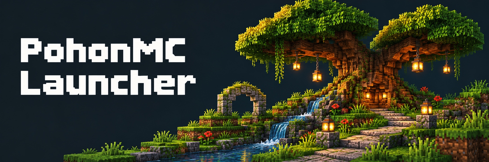

Build Minecraft modpacks locally and send friends a code to install the same pack.
Downloads
Choose the download for your computer.
Checking for downloads…
Install the launcher
Download the build for your system above. If it comes in a ZIP file, extract it first.
Start the launcher, add a Microsoft or Ely.by account, and choose Add Instance. Pick a Minecraft version and, if needed, a mod loader. Open Edit → Mods to add and manage mods.
Install from a code
- Open Add Instance → Share Code, paste the code, and choose Preview Modpack.
- Check the Minecraft version, loader, and listed mods. Turn on Show only server-required mods to see the ones the author marked.
- Choose Install All Mods to recreate the pack, or Install Server-Required Mods Only to install and enable the marked mods.
Troubleshooting
The launcher can’t create a code for one of my mods
Share codes need a supported Modrinth or CurseForge download for each mod. Use Export → Prism Launcher (zip) for a private mod or a file without a supported download reference.
The required-only preview is empty
Ask the pack author to mark the mods and dependencies their server requires, then copy a new code. You can also install the full pack.
Still stuck? Report an issue on GitHub